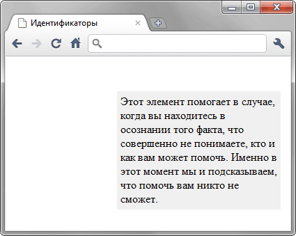

Идентификаторы
Идентификатор (называемый также «ID селектор») определяет уникальное имя элемента, которое используется для изменения его стиля и обращения к нему через скрипты.
Синтаксис
#<Имя идентификатора> { Описание правил стиля }При описании идентификатора вначале указывается символ решётки (#), затем идёт имя идентификатора. Оно должно начинаться с латинского символа и может содержать в себе символ дефиса (-) и подчеркивания (_). Использование русских букв в именах идентификатора недопустимо. В отличие от классов идентификаторы должны быть уникальны, иными словами, встречаться в коде документа только один раз.
Обращение к идентификатору происходит с помощью атрибута id, значением которого выступает имя идентификатора (id="header"). Символ решётки при этом уже не указывается.
Пример
<!DOCTYPE html>
<html>
<head>
<meta charset="utf-8">
<title>Идентификаторы</title>
<style>
#help {
position: absolute; /* Абсолютное позиционирование */
left: 160px; /* Положение элемента от левого края */
top: 50px; /* Положение от верхнего края */
width: 225px; /* Ширина блока */
padding: 5px; /* Поля вокруг текста */
background: #f0f0f0; /* Цвет фона */
}
</style>
</head>
<body>
<div id="help">
Этот элемент помогает в случае, когда вы находитесь в осознании того
факта, что совершенно не понимаете, кто и как вам может помочь. Именно
в этот момент мы и подсказываем, что помочь вам никто не сможет.
</div>
</body>
</html>Результат примера показан на рис. 1.

Рис. 1. Вид текста, оформленного с помощью идентификатора
Примечание
В браузере Internet Explorer до версии 7.0 идентификаторы иногда игнорируются, если они комбинируются с селекторами тегов или классами.
Спецификация
| Спецификация | Статус |
|---|---|
| CSS Selectors Level 3 | Рекомендация |
| CSS 2.1 | Рекомендация |
| CSS 1 | Рекомендация |
Браузеры
| Internet Explorer | Chrome | Opera | Safari | Firefox | |
| 3.5 | 7 | 1 | 3.5 | 1 | 1 |
| Android | Firefox Mobile | Opera Mobile | Safari Mobile |
| 1 | 1 | 4 | 1 |